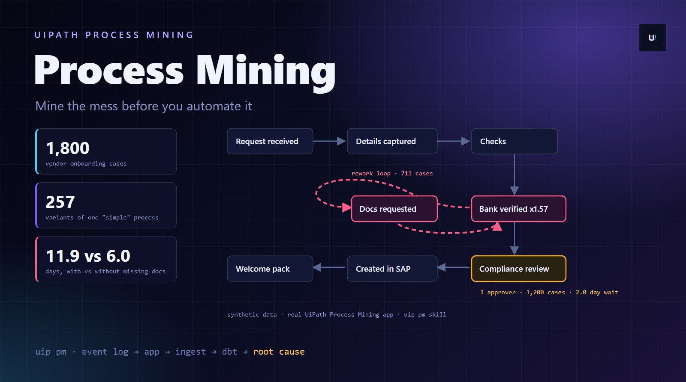
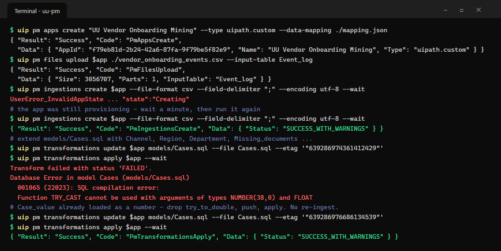
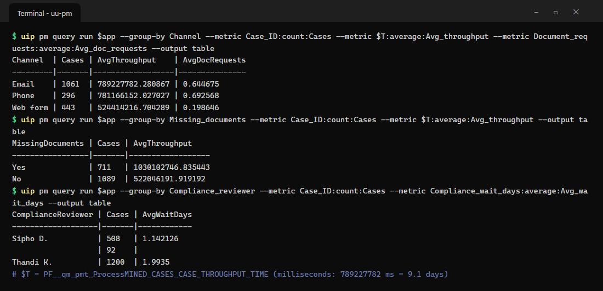
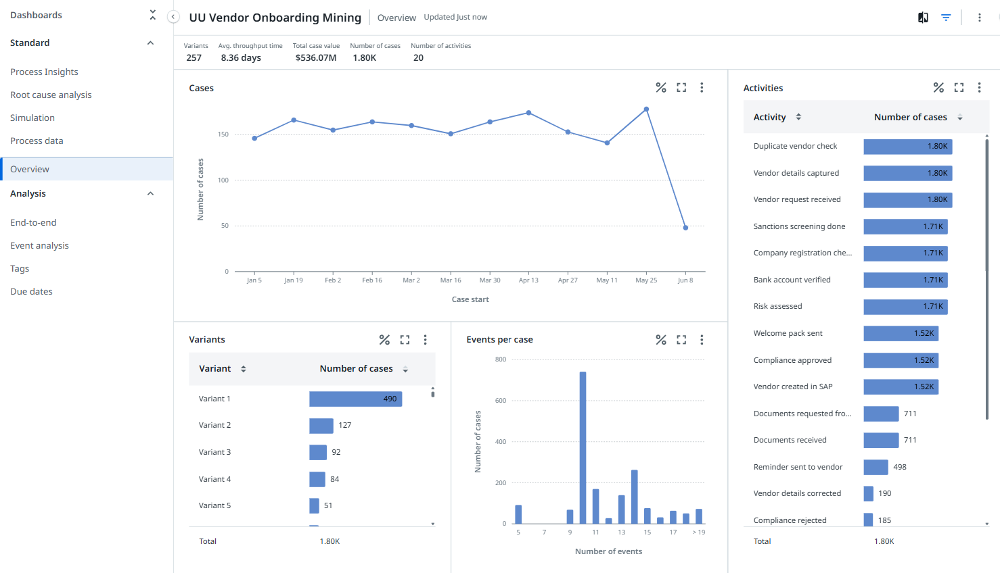
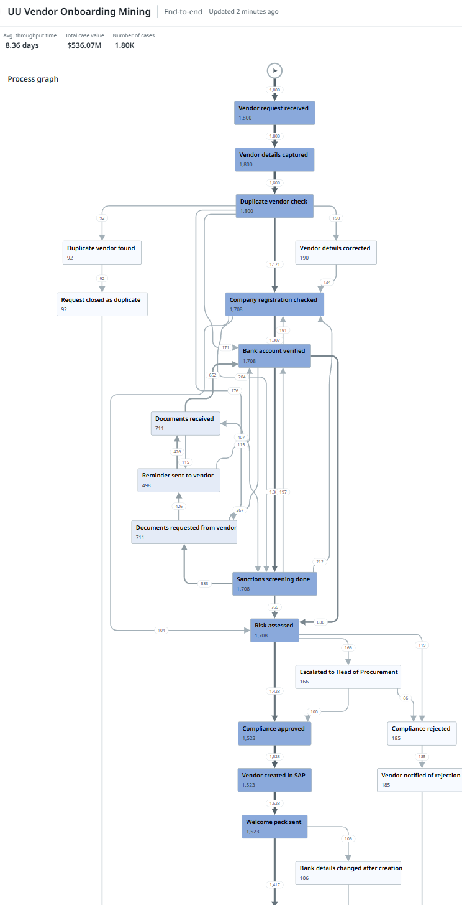
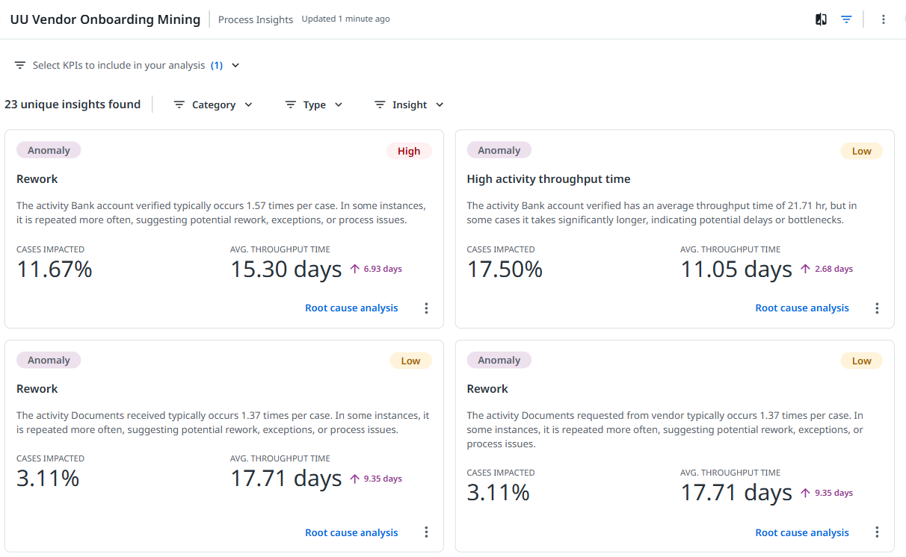

Process Mining: mine the mess before you automate it
Everyone said vendor onboarding takes about a week. 1,800 cases and 257 variants later, the data disagreed. This is a complete, hands-on walkthrough of mining a process with UiPath Process Mining and the uip CLI, from CSV to root cause, mistakes included.

Mine it before you automate it
Every automation programme has the same bad habit. Somebody describes a process in a workshop, we draw it on a whiteboard as five tidy boxes, and then we automate the whiteboard. Six weeks later the bot is live and the process is still slow, because the whiteboard was never the process.
Process mining fixes that by refusing to listen to anyone. It reads the timestamps your systems already write and rebuilds what actually happened, case by case: every path, every loop, every wait. It is the last stop in the Discover layer for a reason. Automation Hub collects the ideas, the Automation Discovery Skill finds the ones nobody mentioned, Delegate and Cartographer document how people do the work, and process mining proves what the work really looks like at scale.
-
You think
The whiteboard
Request comes in, details captured, checks run, compliance approves, vendor created. Five boxes, about a week.
-
The data says
The process
1,800 cases took 257 different paths. The most common path covers only 27% of them. Some cases go round the same loop three times.
-
So you
Automate the right thing
Fix the loop that costs 6 days per case before you build a robot that does the five boxes faster.
The use case: Karoo Distribution
Meet Karoo Distribution, a made-up South African distributor that onboards around 300 new suppliers a month. Requests arrive three ways: an email to Procurement, a phone call that someone writes up, or a web form. Three clerks capture the details, run a duplicate check, verify the company registration and bank account, and send the vendor through sanctions screening. A risk model scores the vendor, compliance signs off, and the vendor is created in SAP with a welcome pack.
Everyone agrees it takes "about a week". The CFO wants to know why some take three. That is our question.
Vendor request received
From email (59%), phone (16%) or web form (25%). The web form forces the vendor to upload documents up front. Email and phone do not.
Details captured and checked for duplicates
A clerk types the vendor into the onboarding tracker and checks it does not already exist. Sometimes the details are wrong and get corrected later.
Registration, bank account, sanctions
Three checks, usually in that order but not always. If documents are missing, the clerk emails the vendor, waits, sends reminders, and verifies the bank account again when they arrive.
Risk scored, compliance decides
A risk model scores the vendor. Compliance approves or rejects. High-risk vendors can be escalated to the Head of Procurement first.
Created in SAP, welcome pack sent
The vendor is created in SAP and gets a welcome pack. Occasionally, weeks later, somebody changes the vendor's bank details. Finance should be nervous about that.
An event log in three columns
Process mining needs exactly three things per row: which case, what happened and when. Everything else is a bonus. Here is the top of the real file, 21,385 rows of it:
-
Required
Case_ID · Activity · Event_end
The case key, the step name and its timestamp. With only these three you already get the process graph, variants and throughput times.
-
Template hooks
Case · Case_status · Case_type · Case_value
The
uipath.customtemplate'sCases.sqllooks for these four by name. Name your columns to match and you skip the most common first-run error (more on that below). -
Bonus
Channel · Region · Department · User
Attributes you want to slice by. They load even if you do not map them, but you have to promote them to case level before you can group by them.
Meet the skill: uipath-process-mining
The skill teaches your coding agent to drive uip pm, the Process Mining part of the UiPath CLI, from a raw CSV to a queryable app. Before the hands-on part, here are the rules it lives by. Each one saved me (or would have saved me) a slow round trip.
-
Every template shares the same pipeline: mapping → upload → ingest → transform → query. Only the expected input tables differ. A single denormalised log is
uipath.custom. A full SAP or ServiceNow extract gets its own template. -
The event-log template's
Cases.sqlreferencesCase,Case_status,Case_typeandCase_value. A minimal mapping does not produce them and dbt fails with000904 invalid identifier. Either null them in SQL or, like me, include them in the CSV. -
A transformation error means the data loaded fine. Fix the SQL, push it, and run
transformations apply. Re-ingesting only helps when the raw file or the mapping changed. -
apps data-mapping get, edit,update --etag, then re-ingest. Recreating the app throws away every transformation you already wrote. -
ingestions create --waitandtransformations apply --waitblock until done and print the dbt or loader error if it fails. -
Query bodies take hashed ids like
F__Cases__Channel__7fdf…. The--group-by/--metricsugar resolves plain names for you. And you can only group by case-level fields, not event-level ones. -
Iterate on the
devstage. Publish when the model is right. The published stage then needs its own ingestion before dashboards show data.
Hands-on: from CSV to a mined process
This is the exact path I took on my dev tenant, mistakes included. I had the skill loaded in Claude Code and let it drive. Every command below is one it ran, and every output is real. Budget an hour the first time.
-
Check the skill is installed
~2 minIf you followed the Case Management post, you already have it:
uip skills installinstalls the whole catalog. Confirm it is there.Terminaluip skills install --agent claudeuip skills show uipath-process-mining# the commands it drivesuip pm --helpCommandsuip pmhas groups forapps,files,ingestions,transformations,query,conformance,deviationsandsimulations. You will use the first five today. -
Log in to the right tenant
~2 minThis one caught me. My organisation has a Development and a Production tenant, and a plain login stopped with an error because I had not said which. Name the tenant explicitly, then check before you create anything.
Terminaluip loginConfigError: Multiple tenants available in organization "…"; none selected.uip login --tenant <your-dev-tenant>uip login status --output jsonSecurityThe CLI login is separate from UiPath Assistant and Studio. Being signed in there does not mean the CLI is pointing at the same place. Always check
login statusbefore you write to a tenant. -
Pre-flight the CSV
~5 minEach check here saves a multi-minute ingestion that fails. The skill runs these locally before anything leaves your machine: encoding, delimiter, a regular field count on every line, no empty trailing rows, and the date format.
What to check# UTF-8, ";" delimited, 11 fields on every line# dates are yyyy-mm-dd hh:mm:ss (not dd-mm, not mm-dd)# 1,800 distinct Case_IDs, 20 distinct activities✓ 21,385 rows · no empty rows · no embedded delimitersDate formatsIf the first number in a date ever goes above 12, it is day-first. Process Mining wants the format spelled out, lowercase and not strftime:
dd-mm-yyyy hh:mm:ss. -
Write the mapping
~5 minThe mapping tells the loader which source column becomes which target field. Map the three required ones (plus
User) and leave the rest: unmapped columns still load under their own names.mapping.json{ "Tables": [ {"SourceName": "Event_log", "TargetName": "Event_log", "Source": "blob","SourceSettings": { "Encoding": "utf-8", "FieldDelimiter": ";", "QuoteCharacter": "\"" },"Fields": [{ "DataType": "text", "SourceName": "Case_ID", "TargetName": "Case_ID", "IsMandatory": true },{ "DataType": "text", "SourceName": "Activity", "TargetName": "Activity", "IsMandatory": true },{ "DataType": "datetime", "SourceName": "Event_end", "TargetName": "Event_end", "IsMandatory": true,"DataTypeSettings": { "DateTimeFormatString": "yyyy-mm-dd hh:mm:ss" } },{ "DataType": "text", "SourceName": "User", "TargetName": "User" }] } ] } -
Create the app, upload, ingest
~10 minThree commands.
apps createbuilds the app from the template,files uploadsends the CSV, andingestions create --waitloads it and runs the transformations.My first ingestion bounced: the app was still provisioning. Wait a minute and run it again.
Terminaluip pm app-types list --output-filter "[].{Key:AppTypeKey,Name:DefaultName}"uip pm apps create "UU Vendor Onboarding Mining" --type uipath.custom --data-mapping ./mapping.jsonuip pm files upload $app ./vendor_onboarding_events.csv --input-table Event_loguip pm ingestions create $app --file-format csv --field-delimiter ";" --encoding utf-8 --wait✓ Status: SUCCESS_WITH_WARNINGSWarnings are fineSUCCESS_WITH_WARNINGSon a first ingest usually means optional template columns you did not provide. Because my CSV already hadCase,Case_status,Case_typeandCase_value, the famous Cases.sql error never happened. -
See what you can query
~3 minquery infolists every queryable table and field. Here is the catch:Channel,RegionandDepartmentlanded on the events table, not on Cases. Andquery runcan only group by case-level fields. Grouping by an event field fails withUserError_EventTableUsedInQuery.Terminaluip pm query info $app --output jsonCases Case_ID · Case · Case_status · Case_type · Case_value · Event_count · throughput …Event_log Activity · Event_end · User · Channel · Region · Department … -
Promote attributes to the case
~10 minSo we edit the dbt model that builds
Cases. Pull it, add the attributes, and while we are there, add flags we will want for root-cause analysis: did this case need documents chased, did the bank details change after creation, who reviewed it and how long compliance took.Terminaluip pm transformations get $app models/Cases.sql --destination Cases.sql# note the ETag it returns - the update must send the same onemodels/Cases.sql (my version)selectEvent_log."Case_ID",min(Event_log."Case") as "Case",min(Event_log."Case_status") as "Case_status",min(Event_log."Case_type") as "Case_type",min(Event_log."Case_value") as "Case_value",min(Event_log."Channel") as "Channel",min(Event_log."Region") as "Region",min(Event_log."Department") as "Department",count_if(Event_log."Activity" = 'Documents requested from vendor') as "Document_requests",iff(count_if(Event_log."Activity" = 'Documents requested from vendor') > 0, 'Yes', 'No') as "Missing_documents",iff(count_if(Event_log."Activity" = 'Bank details changed after creation') > 0, 'Yes', 'No') as "Bank_changed_after_creation",max(iff(Event_log."Activity" in ('Compliance approved', 'Compliance rejected', 'Escalated to Head of Procurement'), Event_log."User", null)) as "Compliance_reviewer",round(datediff('minute', <risk assessed>, <first compliance decision>) / 1440.0, 1) as "Compliance_wait_days",count(*) as "Event_count"from {{ source('sources', 'Event_log') }} as Event_loggroup by Event_log."Case_ID"Terminaluip pm transformations update $app models/Cases.sql --file Cases.sql --etag '<etag from get>'uip pm transformations apply $app --waitETagsThe update must carry the ETag from your get. If someone else changed the file in between, you get a 409. The fix is to get it again and re-apply your change, not to grab a fresh ETag and overwrite them.

The real run, both mistakes included. The app was still provisioning on the first ingest, and my first Cases.sql wrapped an already-numeric column in try_to_double. Fixed the SQL, applied again, no re-ingest. -
Ask it questions
~10 minNow the new case fields are queryable straight away. The
--group-byand--metricsugar takes plain names. Throughput comes back in milliseconds, so 789,227,782 is 9.1 days.Terminaluip pm query run $app --group-by Channel --metric Case_ID:count:Cases --metric $T:average:Avg_throughput --output tableuip pm query run $app --group-by Missing_documents --metric Case_ID:count:Cases --metric $T:average:Avg_throughput --output tableuip pm query percentile $app --field $T --values 0.5,0.9,0.95{ "Values": [ 628123750, 1218046000, 1443483000 ] } # 7.3 · 14.1 · 16.7 days
Three questions, three tables. Email and phone cases take about 3 days longer than web-form cases; cases with missing documents take twice as long; one reviewer carries 70% of the compliance load at almost double the wait. -
Root-cause analysis
~5 minquery rcatakes a selected set of cases and tells you which attribute values are over-represented in it. My first try selected cases byDocument_requestsin [1,2,3] and failed withUserError_UnsupportedFilterTypeKind: value lists only work on text fields. That is why the SQL above has a Yes/NoMissing_documentsflag.rca.json{ "argument": "Case_ID","exploreAttributes": ["<Channel id>", "Case_type", "<Region id>", "<Department id>"],"selectedSet": [[{ "kind": "values", "dimension": "<Missing_documents id>","type": "string", "values": ["Yes"], "invert": false, "displayType": "list" }]] }Terminaluip pm query rca $app --body rca.jsonReading RCAThe response is columnar: Total, Selected, Percentage, Attribute and Value arrays, index-aligned. Pivot it into rows (I had Claude do it) and sort by percentage. The interactive version is in the next section.
-
Publish, and load the published stage
~10 minPublishing copies your transformations to the
publishedstage that dashboards and colleagues use. It reportsIngestionNeeded: true. My first published ingestion failed with "Mandatory Table 'Event_log' is missing": each stage has its own data, so upload the file to the published stage as well.Terminaluip pm apps publish $app{ "Changes": { "Transformations": true, "Bpmn": true }, "IngestionNeeded": true }uip pm files upload $app ./vendor_onboarding_events.csv --input-table Event_log --stage publisheduip pm ingestions create $app --stage published --file-format csv --field-delimiter ";" --encoding utf-8 --wait✓ Status: SUCCESS_WITH_WARNINGS -
Open the dashboards
~5 minOpen Process Mining in Automation Cloud and the app is on the home page: 1.80K cases and 21.39K events. Everything you built from the terminal is now a set of dashboards anyone with access can use, no CLI needed.

The Overview dashboard. 257 variants and an 8.36-day average from what everyone called "a one-week process". The total case value shows a $ sign; the values are Rand. Currency is a field setting you can change with apps model fields set.
Reading the process graph
This is the moment process mining earns its keep. Open End-to-end and expand the process graph. Thick lines are common paths, thin ones are rare, and the numbers on every arrow are case counts. Take a minute with it before you read on.

Three things jump out once you know where to look:
-
Left side
The documents loop
711 cases went Documents requested → Reminder → Documents received → Bank account verified at least once. 498 reminders went out along the way. That loop is the single biggest source of delay.
-
Middle
Bank verification, again
Bank account verified happens 1.57 times per case on average. Every documents loop forces a re-check. Process Insights flags this as rework without being asked.
-
Bottom
Bank details changed after creation
106 vendors had their bank details changed after they were set up in SAP. That is not slow, it is risky: it is the classic pattern behind supplier payment fraud.
Test yourself before we go deeper:
Q1Most cases follow the most common path. True or false?
Variant 1 covers 490 of 1,800 cases, about 27%. The other 73% are spread over 256 other paths. That is normal, and it is why you never automate the whiteboard.
Q2Which activity does Process Insights flag as the top rework issue?
It happens 1.57 times per case, and the 11.67% of cases that repeat it take 15.3 days on average, 6.93 days more than the rest.
Q3You change the SQL in Cases.sql. What do you run next?
The data is already loaded. Apply re-runs the transformations over it. Re-ingest only when the raw file or the mapping changes.
Pick an answer for each one.
Process Insights: the analyst you did not hire
Before I had written a single query, the app had already found the problems. Process Insights scans every activity for rework, unusual throughput times and other anomalies, ranks them, and links each one straight to root-cause analysis. It found 23.

Root cause: why do documents go missing?
Knowing that 711 cases looped is half the story. RCA tells us which cases. Below are the real results for two questions. Each bar shows how often the problem happens in that segment; the top three are highlighted.
The answer is not subtle. Contractors and phone or email requests need documents chased about half the time. Web-form requests need it 15% of the time, because the form will not submit without the documents. And the risky bank-detail changes cluster on email requests, where the bank letter arrives as an attachment someone has to retype.
What the data says
Put the queries, the graph and the insights together and Karoo Distribution's "one-week process" looks like this. Every number is from the app.
-
Cases that chase documents average 11.9 days against 6.0 for cases that do not. Over six months that is about 4,200 case-days lost to waiting for paperwork.
-
Email (1,061 cases) and phone (296) average about 9.1 days; the web form (443) averages 6.1. Web-form cases average 0.20 document requests; email and phone about 0.65.
-
Thandi reviews 70% of cases and they wait 2.0 days for a decision; Sipho's 508 wait 1.1 days. Nothing is wrong with Thandi. The queue is.
-
83 of the 106 came in by email. Changing a vendor's bank account after onboarding should trigger a call-back, and right now nothing makes that happen.
-
Not a separate problem: it is what the documents loop looks like from the bank-verification step. Fix finding 1 and this one shrinks with it.
What if we fixed the front door?
The cheapest fix is the boring one: route email and phone requests through the web form, so documents are validated before a clerk ever sees the request. Drag the slider to see what the mined averages say that is worth.
Requests moved (of 1,357)
Document chasers avoided
From insight to automation
This is where Discover hands over to Build and Run. Each finding maps to a fix, and most fixes are not a robot.
-
Finding 1 + 2
Validate at the front door
A UiPath App (or the existing web form) as the only way in, with document upload required. An agent can read inbound emails and reply with the form link plus a list of what is missing.
-
Finding 1 + 3
Run it as a case
Model the process as a Maestro case: a Missing Information lane that returns to Verification, an SLA on Risk Review, and compliance tasks shared across a group queue instead of one person.
-
Finding 4
Control bank changes
Any bank-detail change after creation starts an approval task and a call-back to a known number. Automation is not the point here; the control is.
-
Then
Measure again
Keep the app connected. Process mining is not a one-off audit: re-run the ingestion monthly and watch the documents loop shrink, or not.
Communications Mining: the other half of the story
Process mining reads systems. But look at where the vendor onboarding pain starts: an email to Procurement with "please set up this supplier" and three attachments, two of them the wrong ones. That is unstructured, and process mining cannot see inside it.
UiPath Communications Mining is built for that side. It reads email, chat and ticket text, learns your taxonomy (request type, missing document, urgency, bank-change request) from a few hundred labelled examples, and turns a shared mailbox into structured, countable data. Point it at the Procurement mailbox and you could answer the questions the event log cannot: how many requests arrive without a bank letter, how many emails are vendors chasing status, and how many "please update our banking details" messages arrive outside the formal process.
-
Process Mining
What happened, and when
Reads system events. Finds the loops, waits and variants. Answers "where does the time go?"
-
Communications Mining
What people are asking for
Reads messages. Finds the intents, the missing information and the hidden requests. Answers "why did this case start, and what is it waiting for?"
Where it breaks
-
Data
Garbage timestamps
Process mining is only as good as the clock. Batch jobs that stamp every event at midnight, or a day-first date read as month-first, produce a confident and completely wrong graph.
-
Scope
The case key
Pick the wrong case ID (the invoice instead of the vendor, the ticket instead of the customer) and every variant and throughput time is measured against the wrong thing.
-
Model
Event fields vs case fields
If you cannot group by something, it is probably on the event table. Promote it in
Cases.sqland apply. -
Lifecycle
Two stages, two datasets
Dev and published each have their own data. Publishing moves the logic, not the rows. Upload and ingest the published stage too.
-
People
Mining is not monitoring people
The reviewer finding is about a queue, not a person. Share process data the way you would want yours shared, and talk to the team before the slide deck does.
-
Display
Units and currency
Throughput comes back in milliseconds from the API, and currency defaults to $. Fix field kinds with
apps model fields set, and check every comparison uses the same kind.
What's next
That is the Discover pillar complete: Automation Hub to capture and govern ideas, the Automation Discovery Skill to find the ones nobody mentioned, Delegate and Cartographer to document how the work is done, and now Process Mining to prove what the work really looks like. Next, Karoo Distribution's vendor onboarding gets rebuilt properly as a Maestro case.
If you want to try this yourself: take any export with a case ID, an activity and a timestamp (an Orchestrator queue, a ServiceNow audit trail, even a spreadsheet tracker), load the uipath-process-mining skill and ask your agent to build you a process app. Then look at the graph before anyone tells you what the process is.